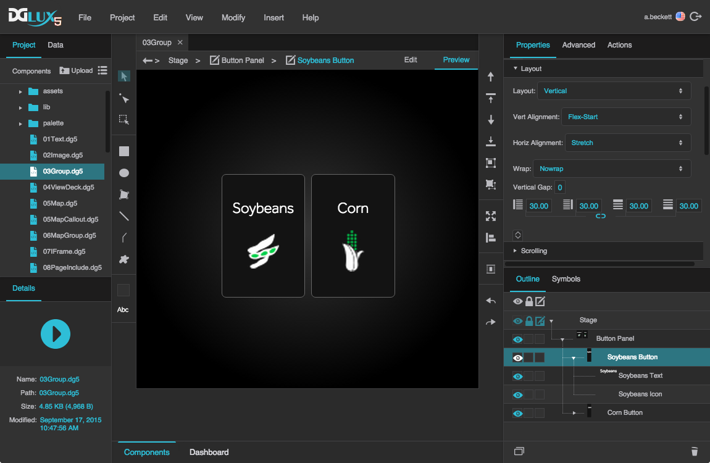

Group
A group is a container that holds other DGLux5 components and can control their layout.
Groups are a fundamental part of most DGLux5 projects. They are often essential when creating clean and responsive layouts. They are also important when creating any widget that comprises multiple components, such as a gauge, heat map, button, pop-up, or callout. Additionally, groups allow you to create a symbol comprising multiple components. Finally, groups can hold repeaters.
The Stage, or root component, of a page behaves like a group.
For a detailed reference of properties that affect groups, see Common Properties and Group and Stage Properties.

Group components in DGLux5. The main group component, "Button Panel," contains two subgroups.

Create a Group
There are two main ways to create groups.
The first way is to group existing objects. This creates a group that has Absolute layout and Fit Ratio scaling set by default. Fit Ratio scaling means that elements in the group will resize with the group while maintaining their aspect ratio.
Select all of the objects you want to group.
You can do this by Shift-clicking, or by using the Select tool to drag a selection rectangle.
In the Quick Access panel to the right of the Document window, click Group.

The second way is to insert an empty group and give it children. This creates a group that has Absolute layout and no scaling set by default. No scaling means that elements in the group do not resize with the group.
Right-click in the Outline or Document window, and select Insert > Components > Group.
Insert more objects as children of the group.
You can do this by dragging objects into the group or by right-clicking the group and inserting objects.

Ungroup Items
To delete a group component and transfer its children to its parent:
- Select the group.
In the Quick Access panel to the right of the Document window, click Ungroup.

Groups FAQ
This section provides answers to some common questions about using groups in DGLux5.
Layout properties follow the CSS3 flexbox concept. You can read more about flexbox in online resources like this one.


More Resources
This post in the DGLogik Community Forum describes using a group to enforce a border surrounding all page content.
These wiki pages show some basic use cases:
- Creating a simple page with vertical and horizontal layouts: Create a Simple Page.
- Using Absolute layout and Scaling to make a group whose children scale: Absolute Layout.
- Creating a heat map: Heat Map.